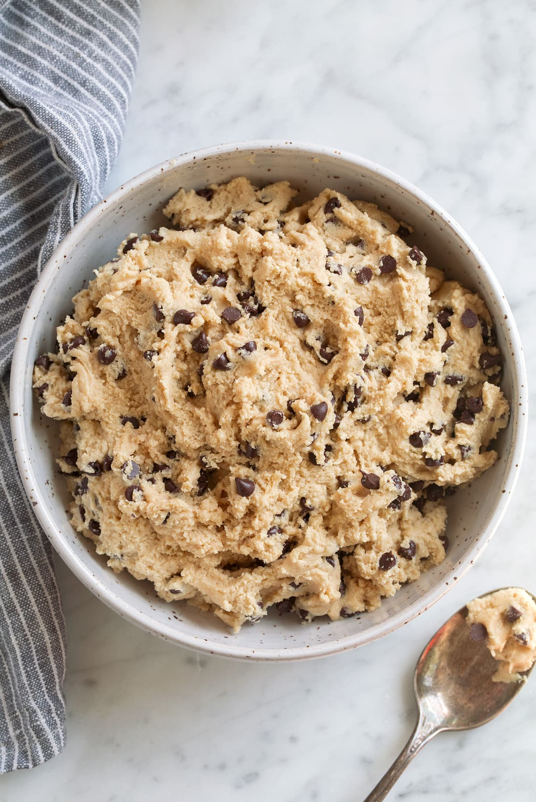

sweet treat
Cookie Dough
Sweet, Soft and Packed with Chocolate Chips
Easy and delicious edible cookie dough made with no raw eggs, making it safe to enjoy straight from the bowl.
What You'll Need
Ingredients
Cookie Dough
- 1 cup (136g) all-purpose flour, heat-treated
- ½ cup (113g) unsalted butter, softened
- ½ cup (110g) packed light brown sugar
- 3 Tbsp (40g) granulated sugar
- ¼ tsp salt
- 1½ Tbsp milk, plus more as needed
- ½ tsp vanilla extract
- ½ cup (82g) chocolate chips
For Heat-Treating the Flour
- 3 cups all-purpose flour
Time To Make
Method
Heat-Treat the Flour
Preheat the oven to 175°C. Spread 3 cups of all-purpose flour evenly onto a rimmed baking sheet.
Bake for 7 minutes, or until the flour reaches 71°C. Allow the flour to cool completely before using it.
Make the Cookie Dough
Add the softened butter, brown sugar and granulated sugar to a medium mixing bowl. Sprinkle in the salt.
Using an electric hand mixer, whip the mixture until pale and fluffy, about 3 minutes.
Mix in the milk and vanilla extract until well combined.
Add the heat-treated flour and mix just until combined.
Add a little extra milk if needed to reach the desired consistency.
Fold in the mini chocolate chips using a rubber spatula.
Serve & Store
Serve the cookie dough immediately, or place it in an airtight container and refrigerate.
The cookie dough can be stored in the refrigerator for up to one week.
Source & Credits
Recipe & Image Credits
Recipe Source
Cooking Classy
This Cookie Dough recipe was originally published by Cooking Classy.
View Original RecipeRecipe creators and image sources are credited to acknowledge the original creators of the content used on this page.